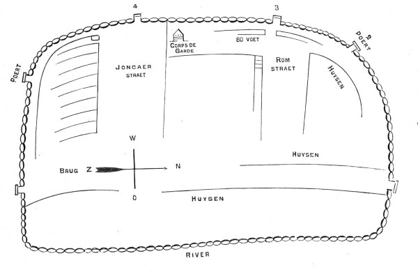

The oldest known historical visualization of the city of Albany seems have come from a faded sketch/drawing
that was found among the New York Land Papers
and is now in the collection of the New
York State Archives. Written on the parchment manuscript is the
after-the-fact notation "French Map 1676." No other information was associated with the document.
The image shown here is a retouched but relatively faithful engraving
of that sketch. Produced during the middle of the nineteenth century,
the engraving has appeared in a number of publications including
the Bicentennial History of the
City of Albany, published in 1886 and the source of this image. However, it seems to be derivative of an essay printed in volume 4 of the Annals of Albany. The accompanying narrative appears below.
The easternmost road running parallel to the river became Market
and Court Streets. "Joncaer" became
State Street. "Rom" became Maiden Lane. Historians have been speculating about the source and authenticity
of this relic for more than a hundred years. We believe it to be
useful for the history of Albany because it conforms roughly to
subsequent cartography and thus provides one of the earliest visual
links to the early Albany past. The Colonial Albany
Project actively seeks more information about this important
resource!
Land Papers: The manuscript map is in volume 1 of the "Land Papers" as described on page 6 of the Calendar of . . . Land Papers, 1643-1803 (Albany, 1864). The sketch originally was undated but was placed between two items dated October 20, 1674 and March 1, 1675.
The diagram on the opposite page is a facsimile
of the oldest plan of the city that has yet been discovered. It
is reduced from the original manuscript in the office of the Secretary
of State, preserved by Dr. O'Callaghan, in the series marked Land
Papers, I, 58. It seems to embrace that part of the city now bounded
by the river on the east, Beaver street on the south, Pearl street
on the west, and Steuben street on the north. But two streets are
denominated on the map, Joncaer straet, now State; and Rom straet,
now Maiden lane. Broadway is represented by parallel lines. The
earliest title that we know for it, was Handelaer straet, as seen
on a map made twenty years later. (See Annals III, 39.) The walls,
it will be seen, are pierced for six gates (poerts). The guard house
seems to have occupied the old elm tree corner, and Pearl street
was eighty feet wide, now eighty-four. The bridge (Jbrug) crossed
the Rutten kill just north of the foot of Beaver street. The dwellings
(huysen) were thus confined within a narrow compass, and surrounded
by a line of upright posts, of which pine seems to have been the
customary material, thirteen feet long and one foot in diameter.
The preservation of this wooden wall was expensive and vexatious
to an extraordinary degree, as the records bear witness. Mandates
wenth forth periodically to compel delinquent burghers to produce
and " sett their quotaes"; " and even forlorn widows were sternly
commanded by the burgomasters and schepens, in grim conclave at
the Citty hall, to " ride their stockadoes; " in default whereof
the schout fiscaal was diected to strain 18d for each deficient
stockadoe !
:first posted 4/26/00; last revised 10/14/13 |